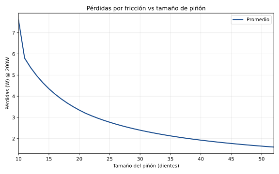
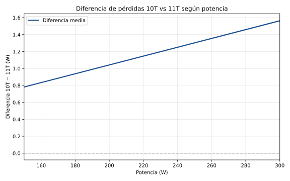
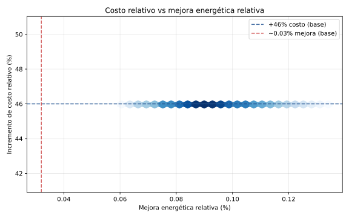

The question: does a 12-speed drivetrain actually make you faster than an 11-speed, or just poorer?
The short answer: in pure performance, the difference is almost nothing. The 12-speed's small 10T cog loses only 1–1.5 W versus the 11T (at 200 W, 90 rpm), and on the large cogs —where you spend 80% of the effort climbing— both systems are identical. Total range rises just 10%, and that extra lives in the descending cog you rarely use. What really changes is your wallet: keeping a 12-speed alive costs about 46% more over 5 years. For most riders a well-maintained 11-speed is still enough; the 12-speed earns its place in racing or specific cases.
What follows, and why trust it: below is the full physical model —friction losses, chainline geometry, thermodynamics and marginal cost— calibrated against peer-reviewed studies (Spicer; Lodge & Al-Sahlani) and run through 10,000 Monte Carlo simulations. This isn't shop opinion: it's the equation, with every assumption declared, so you can check each number yourself. If you just want the conclusion without the math, here's the reader-friendly version.
→ Reader-friendly summary: 11v vs 12v — Is the $245 extra worth it? · ES
Objective: Quantify mechanical, thermodynamic, and biomechanical differences between MTB 11-speed and 12-speed drivetrain systems using validated experimental models.
Methodology: Quantitative analysis based on friction loss models (Spicer et al. 2001, Lodge & Al-Sahlani 2019), chainline analysis (Bertucci et al. 2005), and exercise physiology (Abbiss & Laursen 2005, Lucía et al. 2001). Thermodynamic calculations were applied under controlled conditions with parametric sensitivity evaluation.
Key Findings:
Before a single number, we have to be honest about what the model captures and what it leaves out: a result is worth exactly what its assumptions are worth. Here are mine, on the table, so you know how far to trust the figures that follow.
| Position | 11-speed Shimano M5100 | 12-speed Shimano M6100 | Equivalence |
|---|---|---|---|
| 1 (smallest) | 11T | 10T | Not equivalent |
| 2 | 13T | 12T | Not equivalent |
| 3 | 15T | 14T | Not equivalent |
| 4 | 18T | 16T | Not equivalent |
| 5–11/12 | 18–21–24–28–33–39–45–51T (IDENTICAL) | 100% equivalent | |
Here's the heart of the matter. The entire difference between 11- and 12-speed is born from one physical gesture: how sharply the chain must bend to wrap around a sprocket. Let's see exactly where those watts come from — first the equation, then the intuition.
Where:
In plain terms: the chain loses energy every time a link bends to enter and leave a sprocket, because the pin rubs inside the bushing while the chain is under tension. The smaller the sprocket (smaller Rsprocket), the sharper that bend and the greater the loss — which is why the 10T, the smallest, generates the most friction. The formula just puts a number on that intuition: the loss grows with tension, with pin friction, with how sharply the chain bends, and with speed.
| Sprocket Size | Measured Efficiency (%) | Loss @ 200 W |
|---|---|---|
| 52T | 99.2 | 1.6 W |
| 21T | 98.4 | 3.2 W |
| 11T | 97.1 | 5.8 W |
| 10T | 96.2 | 7.6 W |

Figure generated via Python-based Monte Carlo simulation (10,000 iterations) using the model described in this document. Mean values and 95% confidence band are shown.
The absolute loss differential scales linearly with input power, while the relative impact remains approximately constant:
| Power (W) | Ploss 11T (W) | Ploss 10T (W) | Difference (W) | % of Total Power |
|---|---|---|---|---|
| 150 | 2.9 | 3.7 | 0.8 | 0.53% |
| 200 | 3.9 | 5.0 | 1.1 | 0.55% |
| 250 (base) | 4.9 | 6.2 | 1.3 | 0.52% |
| 300 | 5.9 | 7.4 | 1.5 | 0.50% |

Figure generated via Python-based Monte Carlo simulation (10,000 iterations) using the model described in this document. Mean values and 95% confidence band are shown.
Observation: Absolute losses increase proportionally with applied power, as predicted by the Spicer model. However, the relative impact (difference as a percentage of total power) remains in the 0.50–0.55% range regardless of effort level.
Practical implication: A rider producing 150 W (light climb) experiences a 0.8 W differential, while one at 300 W (hard climb) experiences 1.5 W. In both cases the relative magnitude is similar (~0.5% of total power).
CRITICAL: Claims regarding cog usage distribution are based on deductive reasoning, not verified datasets. The cited shift frequency (18–25 shifts/km) comes from general estimates, not systematic measurements.
Recommendation for future research: Integration with modern power-meter platforms (Shimano Di2, SRAM AXS) that record cassette position. Analysis of 100+ rides across different terrain profiles would allow quantification of actual usage distribution and validation/refutation of present model assumptions.
In contexts where cumulative marginal gains matter:
Courses with long pedalled descent sections, fire roads, or compacted trail. The 12-speed 10% gear range increase (510% vs 463.6%) is concentrated at the top end.
When incremental cost is absorbed by third parties (pro teams, ambassador programmes). Economics are removed as a constraint.
Recreational riders for whom the $245 increase over 5 years is economically irrelevant and who value subjective benefits of updated equipment.
So far, in pure physics, the 12-speed lost by very little. It's in the workshop —chain after chain, cassette after cassette, year after year— that this tiny difference stops being tiny. This section puts a price on it.
| Item | 11-speed | 12-speed | Difference |
|---|---|---|---|
| Initial investment | $145 | $190 | +$45 |
| Chains (7.5 vs 10) | $225 | $350 | +$125 |
| Cassettes (2.5) | $163 | $238 | +$75 |
| Total TCO | $533 | $778 | +$245 (+46%) |
Under modelled conditions, the 12-speed system reduces mechanical losses by approximately 1.3 W on average when the smallest cog is used. The incremental 5-year cost is $245.
Energy potentially saved:
Assuming the smallest cog is used 5% of total riding time (25 hours in 500 hours), the energy saved would be:
Cost per kWh saved:

Figure generated via Python-based Monte Carlo simulation (10,000 iterations) using the model described in this document. Mean values and 95% confidence band are shown.
Energy magnitude context:
This metric does not imply functional equivalence between systems (a battery does not replace a drivetrain); it serves as a scale reference to size the energy magnitude of the savings:
Interpretation: The incremental cost of the 12-speed system is approximately 50× the cost of battery storage per unit of energy. This quantifies the cost–benefit relationship in purely energetic terms, without considering non-quantifiable factors such as operational convenience, subjective preference, or perceived value of updated equipment.
The values used (2,000 km for 11-speed chain, 1,500 km for 12-speed chain) represent conservative estimates based on recreational use with regular maintenance. Actual life exhibits significant variability according to:
Observed range in practice:
The adopted values (2,000 km and 1,500 km respectively) sit at the midpoint of these ranges and are representative of active recreational cycling (3,000–5,000 km/year) with adequate but not obsessive maintenance. For wear measurement protocols and 0.5% threshold, see our chain and 0.5% limit guide; for drivetrain care and lubrication, drivetrain: premature wear.
This section contextualises the model results within drivetrain engineering theory and examines complementary aspects that inform interpretation of the findings.
The Spicer model states that friction losses are inversely proportional to sprocket radius. Lodge & Al-Sahlani (2019) validated this relationship experimentally.
The calculated difference between 10T and 11T (1.1–1.3 W under base conditions) is consistent with this theory:
The model predicts 1.3 W difference over a base loss of ~6.2 W at 10T, representing a 21% reduction. This (21% observed vs 10% predicted by simple radius ratio) is explained by the combined effect of sprocket radius reduction and chain tension reduction.
MTB chain and sprocket manufacturing specifications define dimensional tolerances on the order of ±0.1–0.2 mm for critical parameters.
Implication: Two nominally identical systems (both 12-speed, both 10T) may exhibit efficiency differences on the order of 0.5–1.0 W simply from manufacturing variability if both fall at opposite ends of the tolerance range.
This does not invalidate the model results but contextualises their practical significance: the 10T vs 11T difference (1.1–1.3 W) is real and reproducible under controlled conditions, but may overlap with natural variability of commercial components.
The base model assumes components in optimal condition. Under degraded conditions, absolute losses increase significantly for both systems, but the relative difference between them dilutes.
Numerical example:
Optimal conditions (μ = 0.15):
Degraded conditions (μ = 0.25):
Practical observation: With a dirty chain, 3,000 km of use, and degraded lubrication, the 10T vs 11T difference may be less perceptible than the difference between that chain and a freshly installed one.
The model evaluates constant-load conditions at constant cadence. This approximation is adequate for efficiency analysis under cruise conditions but does not capture the transient dynamics of real MTB riding.
Unmodelled aspects:
Implication: The calculated values (1.1–1.3 W difference) represent idealised conditions. In real MTB use, power, terrain and technique variability introduce noise that can be of the same order of magnitude as the modelled difference.
The model results are technically sound within their stated assumptions and consistent with established chain-drive theory. The quantified 10T vs 11T difference (0.5–1.5 W depending on conditions) is:
What follows is the verdict in cold numbers. But if I had to tell a friend hesitating at the counter: the 12-speed isn't bad — it's oversold. If you already have a well-maintained 11-speed, keep it and spend the difference where you'll actually feel it: tires, a proper tune-up, or simply more miles.
Under modelled conditions and within the analysed parametric ranges:
The 12-speed MTB drivetrain represents a documentable technical evolution with quantifiable improvements in end-cog mechanical efficiency (0.5–1.5 W reduction in friction losses), total gear range extension (+10%, concentrated at high speed), and resolution refinement in the 14–18T cassette zone.
The absolute magnitude of these improvements is, however, limited. The 1.1–1.3 W difference in mechanical losses represents approximately 0.5% of total power in sustained climb scenarios. The metabolic impact associated with improved cadence resolution is estimated at less than 0.5% of total energy expenditure under recreational use conditions with terrain variability characteristic of MTB.
The maintenance cost increase, estimated at +46% over five years under the modelled mileage and replacement frequency assumptions ($245 additional), does not correlate proportionally with the quantified technical improvements when evaluated in purely energetic terms. The marginal cost per kWh saved (~$7,650/kWh considering 5% use of the smallest cog) exceeds comparative energy cost references by orders of magnitude, though this metric serves solely as a scale indicator and does not imply functional equivalence between systems.
For recreational applications where cost is a consideration: The 11-speed system in good mechanical condition meets the fundamental technical needs of MTB transmission. Upgrading to 12-speed constitutes a marginal optimisation whose adoption depends on available budget, usual terrain profile, and individual valuation of non-quantifiable benefits. For a practical, decision-oriented summary, see our 11v vs 12v guide: is the upgrade worth it?.
For competition and specialised applications: The 12-speed system may be justified by the accumulation of marginal gains (0.5% mechanical + 0.3–0.5% estimated metabolic), particularly on terrain that favours extended gearing, and in contexts where second-level differences have competitive relevance.
On methodological limitations: This evaluation is based on applied thermodynamic modelling from published experimental data, complemented by economic analysis under specific assumptions declared in Section 1. The limitations documented in Section 4 must be considered when interpreting the applicability of conclusions to specific use cases.
The analysis does not seek to prescribe purchase decisions, but to quantify measurable technical differences between systems to inform individual evaluations that necessarily incorporate subjective factors, particular use context, and specific budgetary constraints that exceed the scope of this technical document.
The figures in this document are produced by a reproducible Python simulation. The implementation uses exactly the Spicer equation (Section 3.1), calibrated with Lodge & Al-Sahlani experimental data (Section 3.2) and the sensitivity parameters defined in the document.
Reproducibility statement: Source code (drivetrain_monte_carlo.py), requirements (requirements.txt), and raw data reside in the project repository. Any researcher may run the simulation and reproduce the results.
Equations implemented match exactly those described in the white paper.
[ CLUSTER_DATA_LINKS ] // DRIVETRAIN DYNAMICS
For practical implementation and technical decision making, we have condensed the thermodynamic and economic findings into an operational guide:
© 2026 BikeLab Studio. Content under CC BY 4.0: you may copy, translate and publish it, even for commercial purposes. Citation is mandatory. Without attribution, the license terminates automatically (CC BY 4.0, §6.a) and the use becomes copyright infringement: we request the removal of the content and its deindexing. · Design and ownership: Carlos Ravello Joo